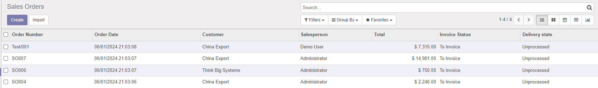

Show the delivery state on the sale order

Mostra lo stato di consegna negli ordini



This odoo module add delivery state on the sale order.
Delivery state is computed based on qty_delivered field on sale order lines.
This is usefull for other modules to provide the state of delivery. The state of the sale order can be forced to fully delivered in case some quantities were cancelled by the customer and you consider you have nothing more to deliver.
Sale order lines can have products or services, as long as the field qty_delivered
is set, it will trigger the computation of delivery state.
This module also works with delivery.carrier fees that are added as a sale order line. Those line are special as they will never be considered delivered. Delivery fees lines are ignored in the computation of the delivery state.
This module is the backport from Odoo 12.0. Its name is sale_delivery_state_zo to avoid conflict with OCA module sale_delivery_state that is avaialbel starting from Odoo 12.0. You should rename this module into sale_delivery_state.

Questo modulo aggiunge lo stato di consegna negli ordini clienti.
Lo stato di consegna è dipende dal campo qty_delivered nelle rige ordini.
Può essere utile per altri moduli che dipendono dallo stato di consegna.
Lo stato di consegna può essere forzato a consegnato nel caso che qualche quantità o qualche riga in ordine sia successivamente annullata dal cliente finale e non si debba più consegnare altri prodotti.
Questo modulo migliora la visibilità dello stato ordine completando l'informazione dello stato di fatturazione con lo stato di consegna.
Questo modulo tiene conto anche le righe di spese di trasporto, qualora venga installato il modulo delivery per il calcolo e l'addebito delle spese di trasporto che non rientrno nel calcolo dello stato consegnato.
Questo modulo è un backport da Odoo 12.0. Il suo nome è sale_delivery_state_zo per evitare conflitti con il modulo OCA sale_delivery_state che è disponibile a partire da Odoo 12.0. Si dovrebbe rinomainare questo modulo come sale_delivery_state.
Authors | Autori:
Contributors | Partecipanti:
This module is maintained by the SHS_AV s.r.l..
This module is part of l10n-italy-supplemental project.
Published information on | Informazioni pubblicate: 2024-06-02